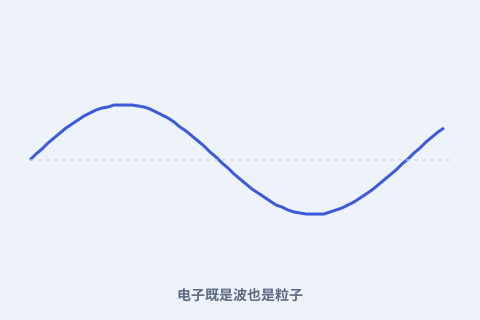

一、两面性
电子打在屏上是一个点（粒子），穿过双缝却留下干涉条纹（波）。两种看似矛盾的行为，都在实验里真实出现。

二、互补而非矛盾
玻尔说：波与粒子不是互相否定，而是互补——要完整描述电子，两种图像都必须保留，只是不能在同一装置里同时显现。
三、测量改变结果
你想看清它是粒子，装置就逼出粒子性；想看波动，装置就逼出波动性。观测方式本身参与了“显现什么”。
四、对科学的冲击
互补原理把“客观实在”的旧观念搅动起来，引发与爱因斯坦的长期论战，也深刻影响了哲学与方法论。
电子打在屏上是一个点（粒子），穿过双缝却留下干涉条纹（波）。两种看似矛盾的行为，都在实验里真实出现。

玻尔说：波与粒子不是互相否定，而是互补——要完整描述电子，两种图像都必须保留，只是不能在同一装置里同时显现。
你想看清它是粒子，装置就逼出粒子性；想看波动，装置就逼出波动性。观测方式本身参与了“显现什么”。
互补原理把“客观实在”的旧观念搅动起来，引发与爱因斯坦的长期论战，也深刻影响了哲学与方法论。
本页内容依据公开史料与科学史通识编写；更多来源见 本站《资料来源与延伸阅读》。延伸检索：维基百科「尼尔斯·玻尔」词条 ↗